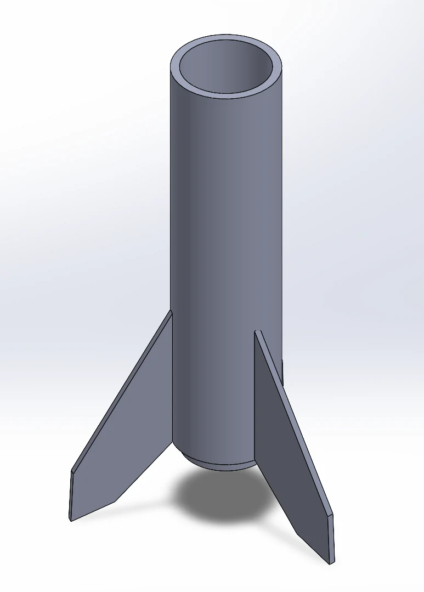
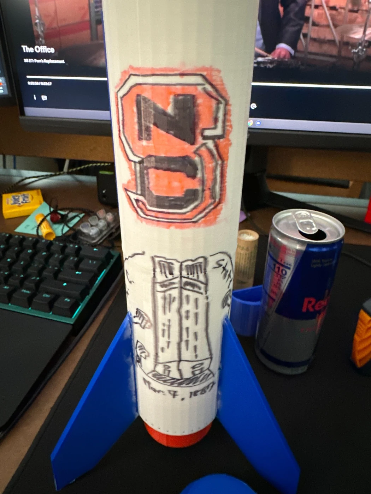
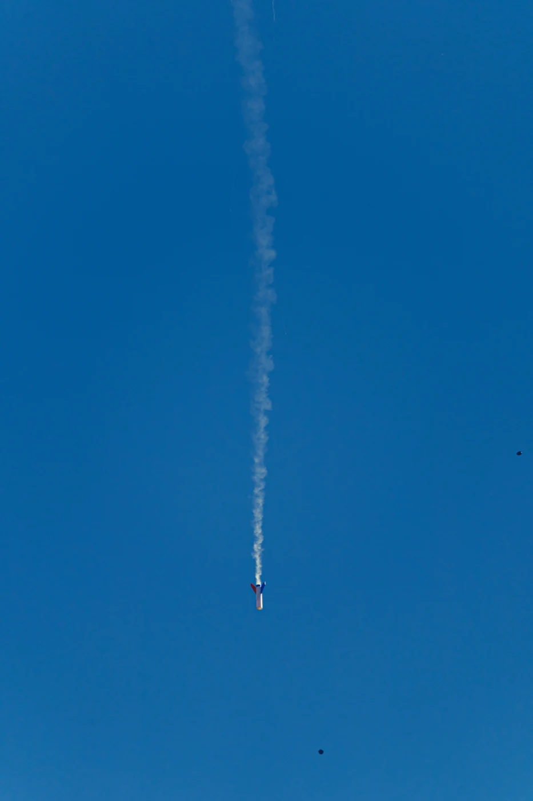

Land closest to a target 150 ft away
After starting at NC State, I joined the Liquid Rocketry Lab to learn about liquid propulsion and contribute to the structures team. For its first first-year challenge, the team asked us to research, design, and 3D print a model rocket powered by a commercial Estes D motor. The landing target was 50 yards away in a direction assigned at launch.
Passive steering and a blunt nose to control range
I researched model-rocket proportions, evaluated the concept in OpenRocket, built the CAD model in Siemens NX, and printed the parts. The design used passive steering through a shift in mass distribution, a finned airframe, and a blunt nose to increase drag and manage range.


About 20 ft from the target, first of six
The motor’s secondary event separated some components during flight. The friction-fit design assumed the nose would mainly need to withstand landing loads. The test showed that the design also needed to account for loads from the motor’s secondary event. The nose cone remained in place through landing. The rocket finished within about 20 ft of the target and placed first out of six entries.

What I took into the lab
The challenge helped me connect with the structures team and learn from upper-year students, including Ben Black. The team’s introductory sessions in statics, dynamics, and solid mechanics helped me build the foundation for taking on more responsibility and mentoring newer members.